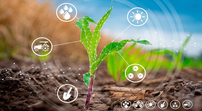

-
 Digitalização na agricultura: tecnologia revoluciona trabalho no
campo Produtores brasileiros se mostram cada vez mais receptivos
a novas tecnologias, já que o uso delas na agricultura
possibilita a automatização de processos e a análise de dados em
larga escala na produção.
Digitalização na agricultura: tecnologia revoluciona trabalho no
campo Produtores brasileiros se mostram cada vez mais receptivos
a novas tecnologias, já que o uso delas na agricultura
possibilita a automatização de processos e a análise de dados em
larga escala na produção.
-  Tecnologia avança no campo e trabalhadores se adaptam à nova fazenda digital e mecanizada Formação profissional para o agro se amplia para preparar os profissionais que precisam lidar cada vez mais com máquinas e softwares.
-
 Tecnologias utilizadas no setor florestal
Tecnologias utilizadas no setor florestal
-
Pesquisa inédita mostra que o agro quer mais tecnologias e
capacitação no campo